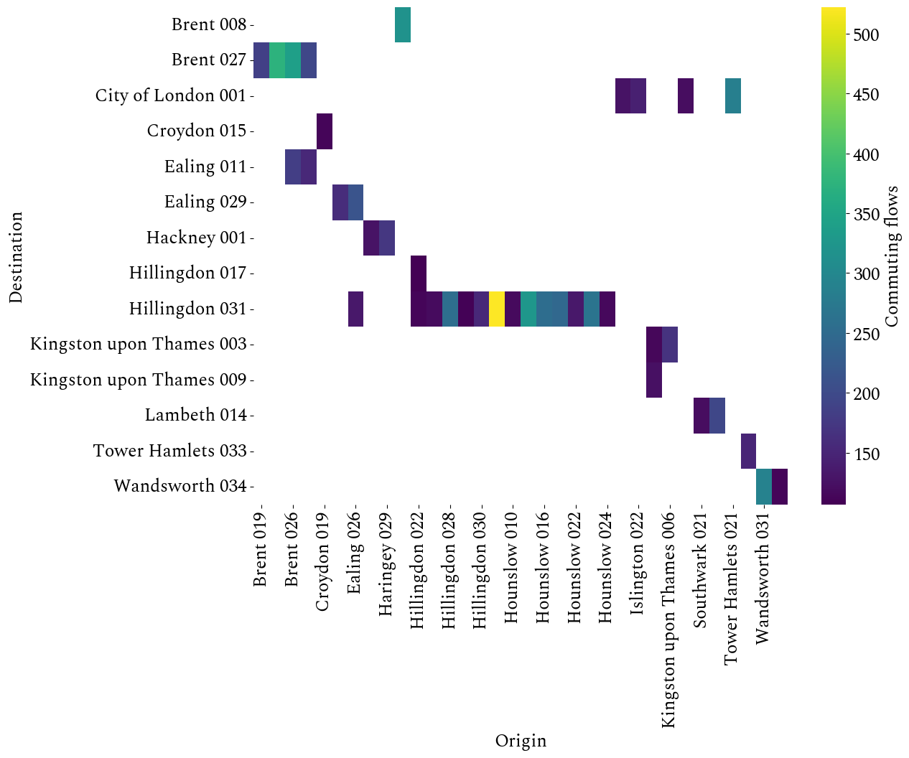

CASA0007 Written Investigation
Analysis of commuting patterns between Middle layer Super Output Areas (MSOAs) in London based on clustering method
Introduction
Commuting patterns reflect a city’s economic geography (Ratti et al., 2010), and study people’s commuting patterns is crucial to understand a city’s economic development (Martin et al., 2018). The Census provides large and complex commuting data for this purpose, which are presented in the form of origin-destination flow that reflect the human mobility between regions. In addition, differences between individuals should not be ignored when analyzing mobility data (Shen and Batty, 2019). Therefore, this study will be based on London commuting data from UK census 2021, focusing on exploring whether the mobility patterns of people of different social grade in different Middle layer Super Output Areas (MSOAs) show clustering phenomena. We first assume that this pattern is completely spatially random, which also suggests that people’s usual working locations are randomly distributed. The correctness of the hypothesis will be tested in the subsequent analysis.
Literature Review
Origin-destination (OD) flow data can be regarded as trajectory data with a coarser resolution in time and space. It retains the geographical location information of the start point and end point of the real trajectory, implying the direction and distance of the trajectory (Guo and Zhu, 2014). The idea of using clustering to analyze OD flow is divided into point-based clustering and line-based clustering (Guo et al., 2020). Point-based clustering considers the similarity of points and is based on metrics such as Euclidean distance, using K-means (Heredia, Moreno and Yushimito, 2022), hierarchical clustering (Zhu and Guo, 2014), density-based clustering (Pei et al., 2015), etc. to find point clusters. Line-based clustering considers the similarity of lines and is based on metrics such as dynamic time warping (DTW) distance or geometric features, using TR-OPTICS (Shuliang et al., 2018), Fast-clusiVAT (Kumar et al., 2018), TRACLUS (Lee, Han and Whang, 2007) and other methods to find line clusters. In general, point-based clustering is easier to implement, and the computational complexity is lower than line-based clustering. For more complex origin-destination (OD) flow data or trajectory data, more accurate clustering results can be obtained by using line-based clustering methods.
Data Presentation
This study uses OD flow data from the UK Census 2021 (“Origin-destination data, England and Wales: Census 2021 - Nomis - Official Census and Labour Market Statistics,” no date). Specifically, OD public data contains a total of 30 datasets, consisting of main flows, univariate and multivariate datasets. These datasets are divided into four types. We selected the OD flow dataset by approximated social grade, which belongs to the OD Workplace data type.
This dataset has a total of 3760,466 rows of data. The data of London MSOAs was selected through filtering, and there are specifically 565,668 rows of data. The dataset contains several main key fields, as shown in Table 1. The four social grade are represented below by AB, C1, C2, and DE. By selecting the top 50 pieces of data with highest flow, the OD matrix is drawn, as shown in Figure 1, which clearly presents the relationship between the origin and the destination. It is not difficult to find that the matrix has no values in most cells, which indicates that the OD matrix is a sparse matrix in most cases. In addition, cells with numerical values are clustered on specific vertical coordinates (destination).
Further combined with the location information of MSOAs, the 100 pieces of data with highest flow in different social grade were selected. The spatial distribution of OD flow is shown in Figure 2. From Figure 2, it can be clearly found that there are obvious clustering phenomena in people’s working places, and clustering phenomena are different between different social grade. Next, quantitative clustering methods will be used for analysis.
| Key fields | Description |
|---|---|
| MSOAs code | Origin area code |
| MSOA of workplace code | Destination area code |
| Approximated social grade | There are four social grades in total: AB, C1, C2, and DE |
|
|
| Count | Commuting flows |

Methodology
Since K-means (Lloyd, 1982) is a commonly used and relatively simple clustering method that can quickly provide clustering results with certain reasonableness, K-means is first used to perform cluster analysis on the OD flow data for different social grade. The core of K-means is to aggregate N data into specified K clusters based on the similarity between the data. The similarity between the data is calculated using the Euclidean distance. K-means method is greatly affected by the K value, so choosing a reasonable K value will determine the accuracy of the clustering results. We use four methods to determine the K value for comprehensive comparison. These methods are Elbow Method, Silhouette Score, Calinski-Harabasz Index, and Davies-Bouldin Index. We select different K values to calculate the results of these four methods respectively, as shown in Figure 3. Elbow Method needs to find the critical point of data change. Silhouette Score and Calinski-Harabasz Index are all better with bigger values, while the Davies-Bouldin Index value is as small as possible. Therefore, through Figure 3 we determine that for the OD flow data with a social grade of AB, the K value is 5; For the OD flow data with a social grade of C1, the K value is 6; For the OD flow data with a social grade of C2, the K value is 2 ; For the OD flow data with a social grade of DE, the K value is 8. After selecting a reasonable K value, the K-means method can be applied for cluster analysis.
Considering that the actual OD flow dataset can have clusters of arbitrary shapes and some abnormal data, using K-means method may not be able to obtain more appropriate clustering results, so density-based clustering methods can be used. Hierarchical Density-Based Spatial Clustering of Applications with Noise (HDBSCAN) (Campello, Moulavi and Sander, 2013), as a stable density-based clustering method, is an improved method of Density-based spatial clustering of applications with noise (DBSCAN) (Ester et al., 1996). HDBSCAN first uses mutual reachability distance (Campello, Moulavi and Sander, 2013) to measure the similarity of two points. Mutual reachability distance is defined as
\[ d_{\text{mreach}-k}(a, b) = \max \{\text{core}_k(a), \text{core}_k(b), d(a, b)\}, \]
where \[ d(a, b) \] represents the original distance between point a and point b, and \[ \text{core}_k(b) \] is defined as the current point x to its k-th distance between close points. And the mutual reachability distance allow HDBSCAN to handle data with uneven density. After that, the minimum spanning tree is used to construct a hierarchical tree model between points, and the idea of hierarchical clustering is introduced. This allows HDBSCAN to automatically obtain optimal clustering results by simply setting the minimum size of the cluster (minPts). For the OD flow dataset, after many attempts, it was determined that minPts was all set to 4.
Results
The clustering results of K-means method are shown in Figure 4. At the same time, we calculated the area with the highest occurrence of working places in the clustering results, and the results are shown in Table 2. Combining Figure 4 and Table 2, it can be found that the working places with social grade AB are basically located in City of London 001, and people’s residences are also in areas closer to the city center; The working places with social grade C1 are mostly located in Hillingdon 031, a small number of working places are scattered in different locations of the city; Most of the working places with social grade C2 are also in Hillingdon 031, and the rest of the them are scattered in the northeastern area of the city; People with social grade DE have a large number of working places in Hillingdon 031 and Brent 027, and the remaining working places are dispersed in different locations of the city.
The clustering results of HDBSCAN are shown in Figure 5, and the results are more detailed. The results of social grade AB have 5 clusters, which more carefully divides the OD flow of different commuting distances and directions; The results of social grade C1 are divided into more clusters, and it can be found that there are many smaller clusters around Hillingdon 031; The results of social grade C2 are also divided into more clusters, spread in the west, south and northeast of the city; The results of social grade DE are roughly the same as K-means method.
| Social grade | Main destination |
|---|---|
| AB |
|
| C1 |
|
| C2 |
|
| DE |
|
Discussion
Comparing the results of K-means and HDNSCAN method with London house prices per square meter map (Plumplot, no date b) and London net household income map (Plumplot, no date a), we found that people with social grade AB have higher incomes and also live in places with higher housing prices; Some people with social grades of C1, C2, and DE also have higher incomes, but most of them live in places with cheaper housing prices. Other research shows that people with higher socioeconomic status can bear more commuting costs than those with lower socioeconomic status and therefore can adapt to longer trips (Dargay and Clark, 2012), but it can also be found from the results that there are still some people with lower economic status who may choose longer commuting distances due to housing prices.
In addition, according to the London area demographic map (Ibbetson, Symonds and Hutchinson, 2020), it is found that the area around Hillingdon 031 has a large population, and the northeastern region also has a large population, which are consistent with our clustering results, and it means a lot of people work and live there. Furthermore, the clustering results are also highly correlated with job opportunities. From the London MSOA employment map (Hill et al., 2018), it can be clearly seen that most job opportunities are distributed around Hillingdon 031, City of London 001 and the eastern region. All these can illustrate the gradual emergence of multiple urban centers in London, and need to pay attention for changes in regional structure in future urban planning.
Conclusions
This study applies K-means and HDBSCAN clustering methods to London OD flow data, analyzes the commuting patterns of people in different social grade among MSOAs, and explains the reasons for the clustering phenomena based on house price and income factors. Finally, we bring out that the urban structure is changing. This study also has some shortcomings. It only considers the internal factor of social grade, and people’s commuting patterns are often related to multiple factors. Future work can use more factors and use more complex clustering methods to explore commuting patterns in depth.
Word count: 1619
Github repository: git@github.com:XianchenWang0421/CASA0007_Written_Investigation.git